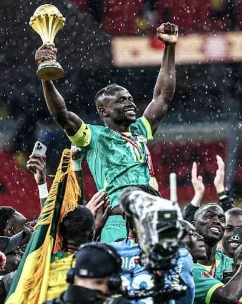

Sadio Mané usa o futebol para transformar a vida do seu povo
O astro senegalês usa os ganhos da carreira para financiar hospitais, escolas e projetos sociais em sua comunidade natal, Bambali.
O astro senegalês usa os ganhos da carreira para financiar hospitais, escolas e projetos sociais em sua comunidade natal, Bambali.
"Por que eu teria 10 Ferraris, 20 relógios de diamante ou dois aviões? O que todos esses objetos fazem por mim e pelo planeta? Eu passei fome, trabalhei no campo e sobrevivi tempos difíceis. Com o que eu ganho no futebol, posso ajudar meu povo", diz Sadio Mané.

Sadio Mané celebrando o título da Copa Africana de Nações
O atacante de 34 anos se tornou um herói nacional não apenas pelos gols e títulos conquistados ao longo de sua carreira, mas também por transformar o sucesso no futebol em investimentos para sua comunidade.
Hospitais, escolas e ações de apoio social financiados pelo craque ajudam diariamente a mudar a realidade de senegaleses.
Fonte: ICL Notícias